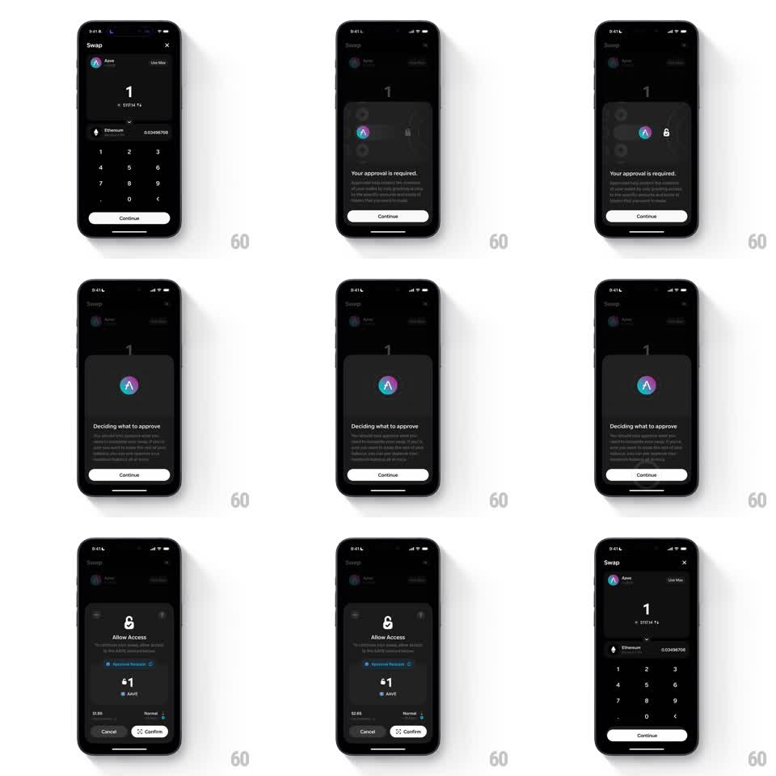

Media
Frame-by-frame

Rebuild this interaction 1:1: Family's swap approval sheet flow - from the dark Swap screen (Aave, amount "1", numpad), Continue raises a sheet that morphs through steps - "Your approval is required", "Deciding what to approve" with the Aave logo, and "Allow Access" ($1 AAVE, Cancel / Confirm) - each step crossfading with springy height changes before collapsing back to the Swap screen.

Rebuild this interaction 1:1: Family's swap approval sheet flow - from the dark Swap screen (Aave, amount "1", numpad), Continue raises a sheet that morphs through steps - "Your approval is required", "Deciding what to approve" with the Aave logo, and "Allow Access" ($1 AAVE, Cancel / Confirm) - each step crossfading with springy height changes before collapsing back to the Swap screen.
## Integration
Integration: stack-agnostic spec - springs given as stiffness/damping, timed motions as duration + curve; map every value to your framework and animation library of choice.
## Scene
Dark Swap screen: Aave row, amount "1" ("$117.14"), Ethereum row, numpad, white "Continue". Sheet step 1: Aave and lock glyphs, "Your approval is required", explainer, "Continue". Step 2: centered Aave logo, "Deciding what to approve", paragraphs, "Continue". Step 3: lock glyph, "Allow Access", "Approve Request" link, "$1 AAVE" summary, fee row, "Cancel" / "Confirm" pair.
## Motion spec
Pattern: multi-step sheet morph with springy height continuity.
- Tap Continue: the numpad drops (200ms), the sheet rises (spring ~300/20), step 1 content staggering in (60ms rows).
- Each Continue: the current step's content slides up and fades (200ms) as the next step's content rises from below (spring ~320/18), the sheet's height easing to fit (250ms); the white Continue pill persists at the bottom through steps 1-2 as the continuity anchor.
- Step 3 replaces the single pill with the Cancel/Confirm pair (the pill widening then dividing, 250ms).
- Confirm: the sheet slides down (250ms), the Swap screen returns with the numpad rising (200ms).
- Cancel: same collapse, no state change.
## Calibration
- The sheet frame never jumps between steps - only content and height animate.
- The Aave logo is the visual thread, present in every step.
## Reduced motion
Steps crossfade (200ms) at fixed sheet height.
## Don't miss
- "Deciding what to approve" is a loading-flavored beat - its paragraphs shimmer subtly.
- The Cancel/Confirm split happens only on the final step.